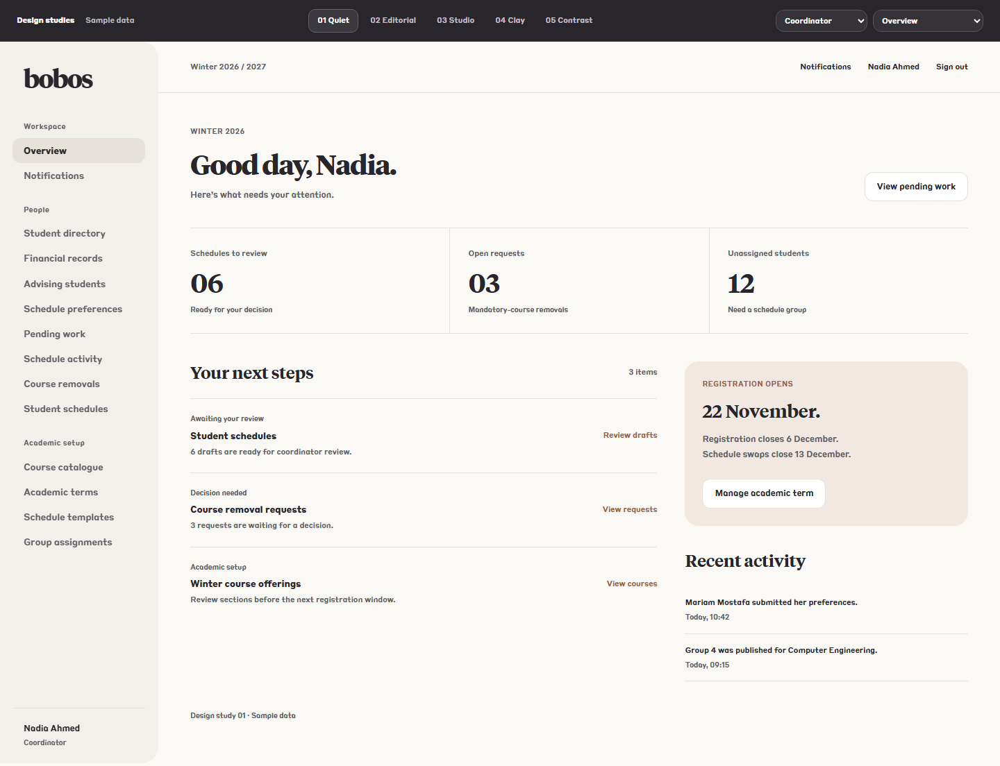
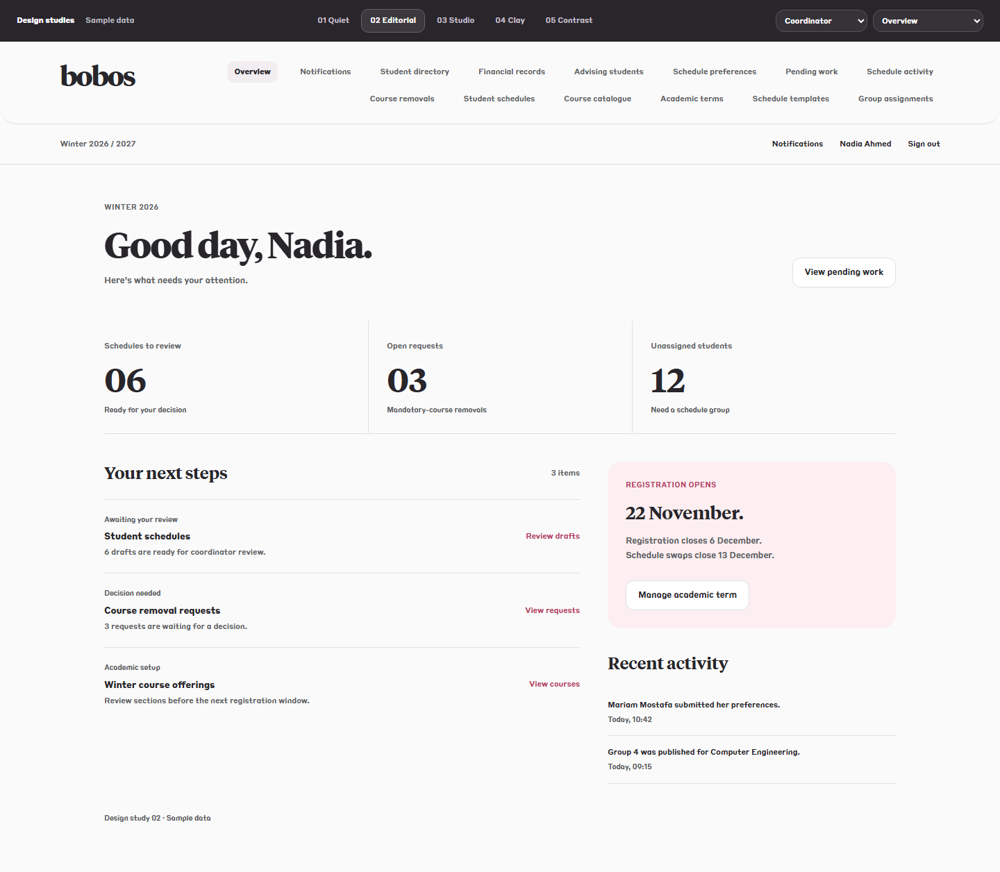
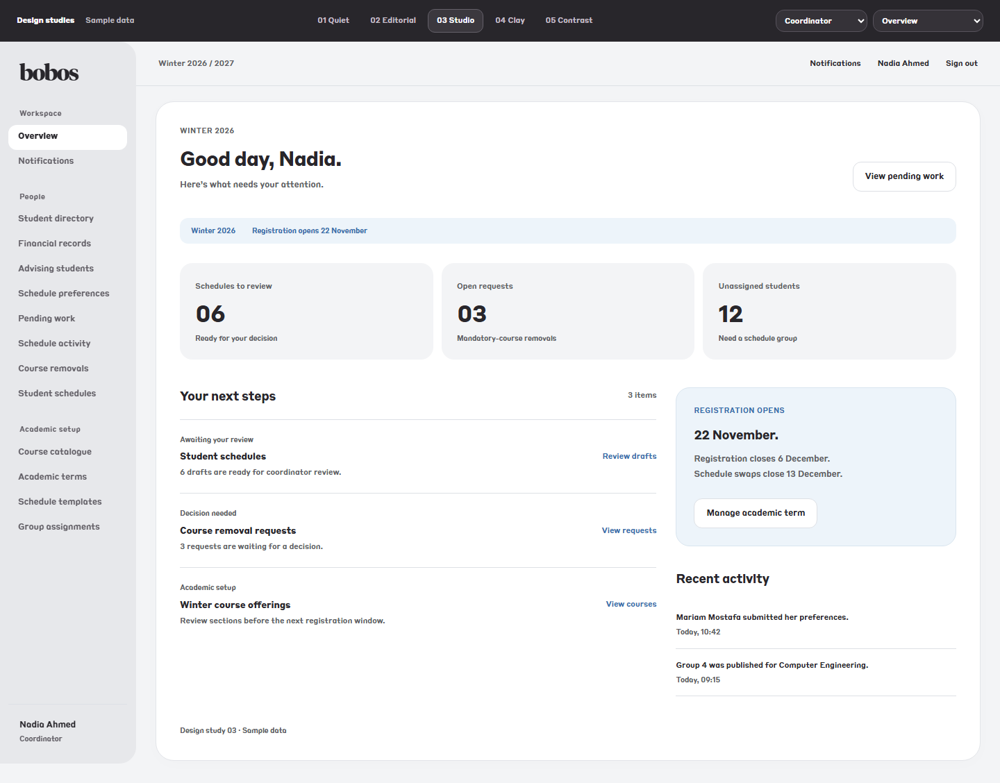
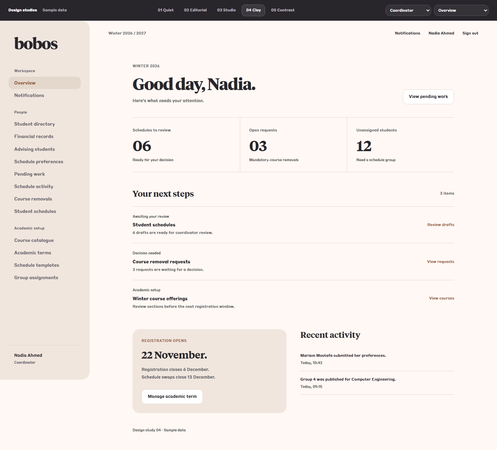
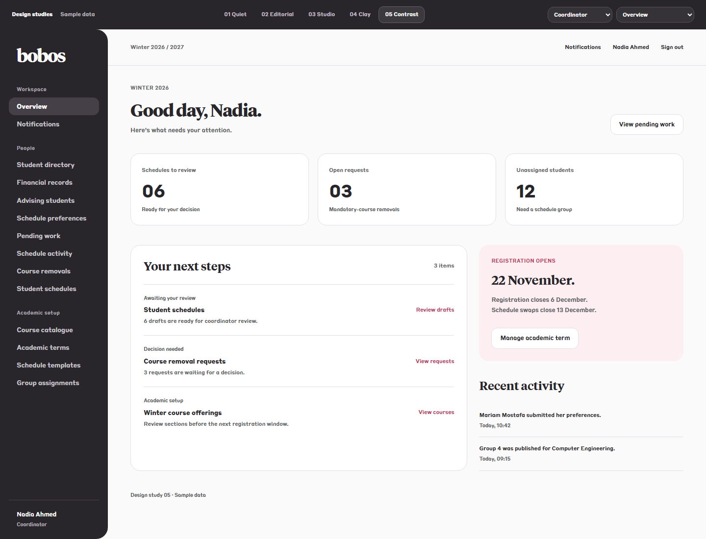

01 Quiet
Warm neutrals, open task lists, and restrained clay accents. Recommended starting point.

Tiempos & Styrene B. Cherry, Ice & Clay. Five complete interface studies, each with 30 page views and five roles.
Warm neutrals, open task lists, and restrained clay accents. Recommended starting point.

Horizontal navigation, expressive serif hierarchy, and an open reading surface.

Compact navigation, an inset white workspace, and muted ice accents.

Warm paper, a generous navigation index, and one focused work queue.

Charcoal navigation, precise work surfaces, and a small measure of cherry.
